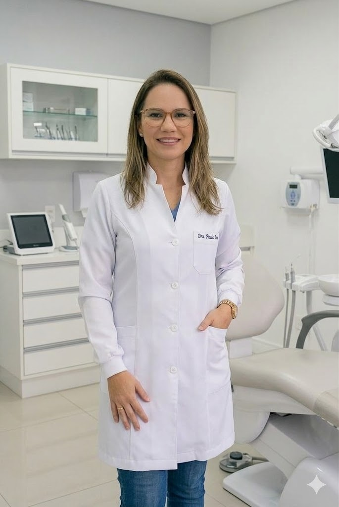
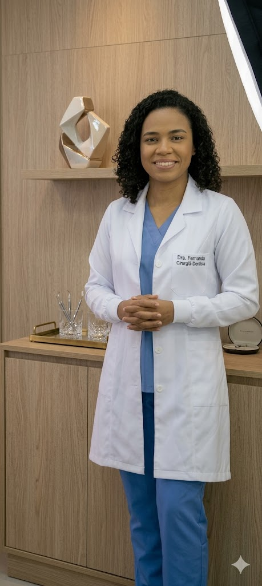
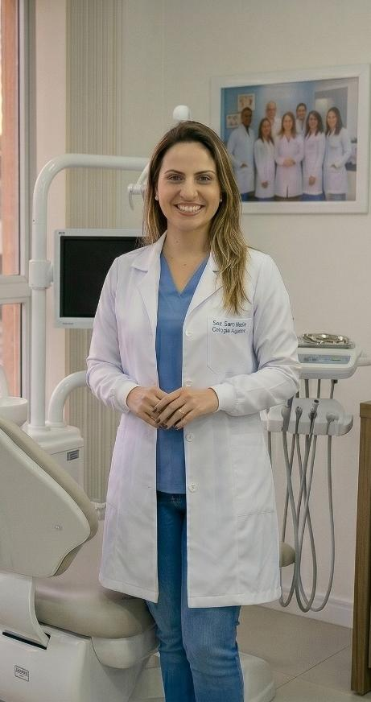

Nossa Historia
Nossa clínica nasceu através de muito esforço, dedicação e vontade de crescer. No começo, tudo foi construído aos poucos, conciliando estudos, trabalho e o sonho de oferecer um atendimento de qualidade para cada paciente. Foram anos de aprendizado, desafios e muito empenho para transformar dedicação em experiência profissional.
Com o passar do tempo, a clínica foi evoluindo graças ao compromisso com a profissão e ao cuidado verdadeiro com as pessoas. Cada conquista alcançada representa horas de estudo, trabalho duro e a busca constante por oferecer um atendimento humanizado, acolhedor e de confiança.
Hoje, após mais de 15 anos de atuação, seguimos mantendo os mesmos valores do início da nossa trajetória: respeito, responsabilidade e paixão pelo que fazemos.
Com os Melhores Profissionais na Área
Dra. Eroneide França

A 18 anos na área de Ortodontia, especialidade responsável pelo alinhamento dos dentes e correção da mordida. Durante sua carreira, desenvolveu experiência no uso de aparelhos ortodônticos tradicionais e alinhadores invisíveis, sempre buscando proporcionar um sorriso mais saudável e harmonioso aos seus pacientes. Seu atendimento é reconhecido pela dedicação e atenção aos detalhes de cada tratamento.
Dr. Camila Rocha

Com 15 anos de experiência em Implantodontia, a Dra. Camila Rocha dedica sua carreira à realização de implantes dentários e procedimentos de reabilitação oral. Seu trabalho é voltado para devolver conforto, funcionalidade e autoestima aos pacientes, utilizando técnicas modernas e seguras para garantir resultados de alta qualidade.
Dra. Fernanda Oliveira

Na área de Odontopediatria, a Dra. Fernanda Oliveira atua há 12 anos acompanhando o desenvolvimento da saúde bucal infantil. Conhecida pelo atendimento acolhedor e humanizado, ela busca tornar as consultas mais leves e tranquilas para as crianças, incentivando desde cedo os cuidados corretos com a higiene bucal e a prevenção de problemas dentários.